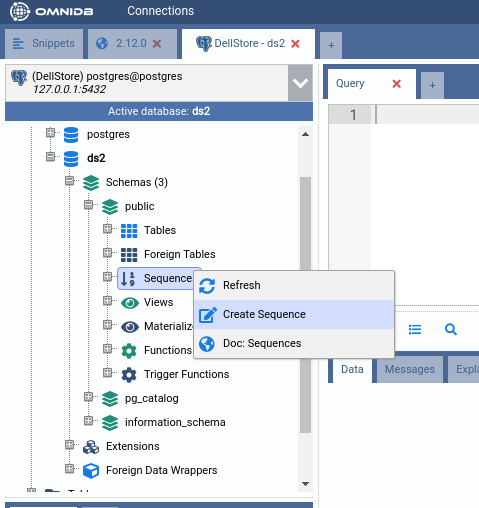
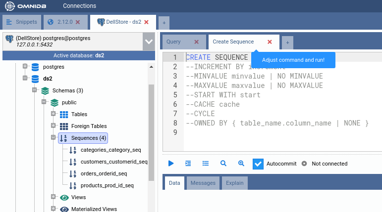
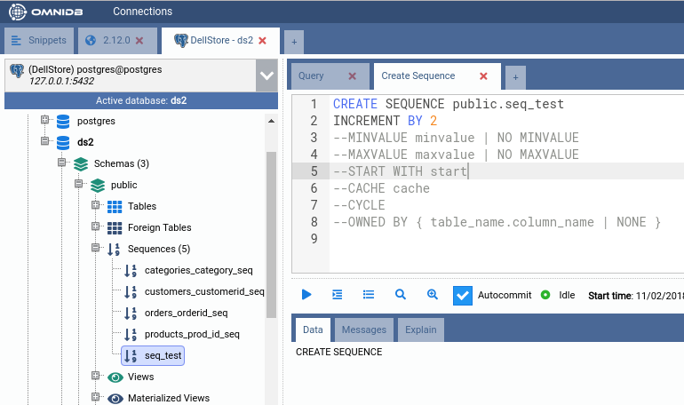
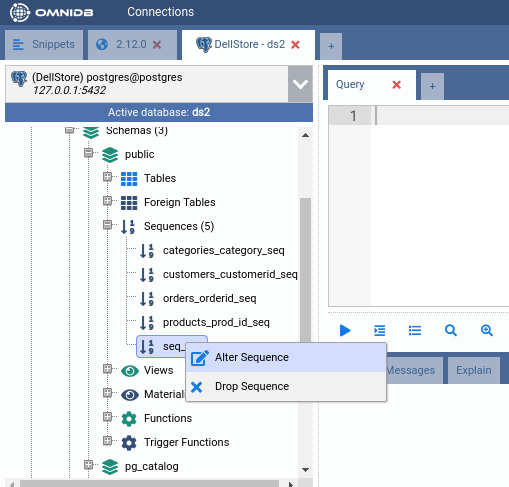
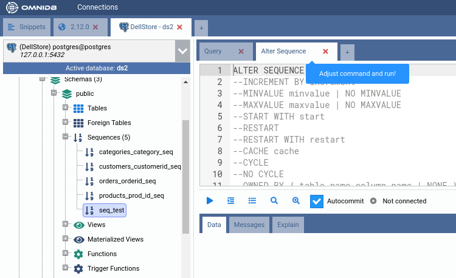
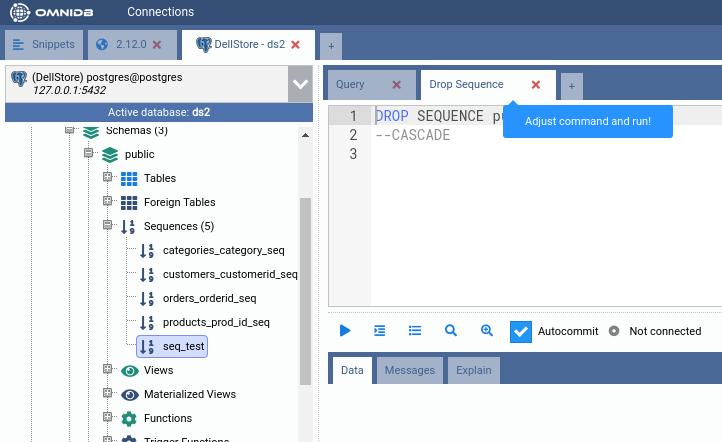

Správa dalších prvků
Všechny struktury PostgreSQL lze spravovat pomocí SQL šablon. To dává uživateli větší kontrolu, než jakou by měl při úpravě struktur pomocí grafických formulářů.
Uvažujme například sekvence uvnitř schématu public databáze ds2. Novou
sekvenci vytvoříte tak, že kliknete pravým tlačítkem na uzel Sequences
(Sekvence) a zvolíte Create Sequence.


Po změně názvu sekvence můžete odkomentovat další volby příkazu a nastavit je podle svých potřeb. Jakmile celý příkaz vypadá v pořádku, stačí jej spustit a nová sekvence bude vytvořena:

Kliknutím pravým tlačítkem na existující sekvenci ji můžete upravit nebo odstranit. Funguje to stejně jako při vytváření, tedy pomocí SQL šablony, kterou si uživatel upraví.


